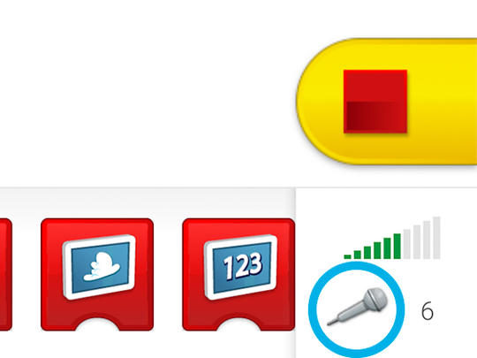
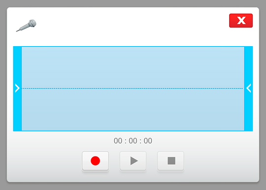

프로그래밍 도움말
소리를 기록하려면 제어판의 마이크 아이콘을 누르십시오.

소리를 기록한 후, 창의 제어 장치를 이용해 녹음 상태를 조정하여 맞춤화된 사운드를 만드십시오.

완성된 사운드를 사운드 번호 0으로 사용할 수 있습니다. 새 사운드가 기록되면 새 사운드가 최근에 기록된 사운드를 대체합니다.
소리를 기록하려면 제어판의 마이크 아이콘을 누르십시오.

소리를 기록한 후, 창의 제어 장치를 이용해 녹음 상태를 조정하여 맞춤화된 사운드를 만드십시오.

완성된 사운드를 사운드 번호 0으로 사용할 수 있습니다. 새 사운드가 기록되면 새 사운드가 최근에 기록된 사운드를 대체합니다.